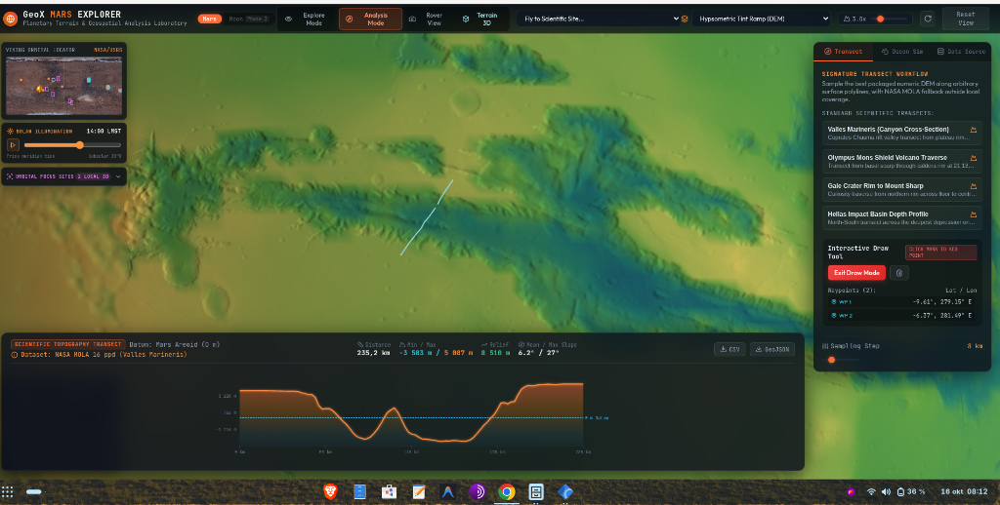
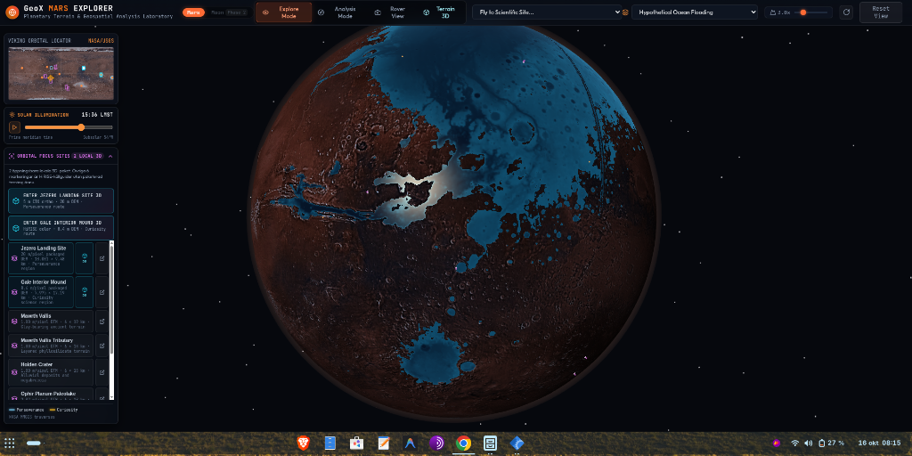

Planetary Terrain & Geospatial Analysis Laboratory
An interactive, client-side 3D WebGL engine rendering multi-resolution Martian altimetry, high-resolution orbital ortho-imagery, rover traverse telemetry, and hypothetical paleoceanographic simulations directly in the browser.
Cloudflare Pages & Git Deployment Pipeline
Git-based preview and production deployments on Cloudflare's global edge, with packaged terrain assets and external NASA/ArcGIS imagery streams.
GitHub Version Control
All active development is tracked in an automated pipeline. The gemini-dev branch acts as the dedicated staging and preview environment, while main deploys verified production releases to Cloudflare Pages.
Cloudflare Pages Runtime
The client-side Three.js/WebGL bundle compiles with Vite + TypeScript. Continuous integration automatically deploys preview builds to unique Cloudflare edge staging URLs on every push to gemini-dev with zero server runtime overhead.
Static Terrain & External Imagery
Packaged DEM, ortho, panorama, audio, and traverse assets ship with the Cloudflare Pages deployment. Global THEMIS and CTX imagery streams from NASA Trek and ArcGIS OnMars. R2 remains a future option if dataset volume outgrows Pages.
Pages Assets • NASA Trek • ArcGIS OnMarsInteractive Analysis Showcase
Current laboratory modules verified in staging with real NASA and USGS planetary datasets.
1. Local Terrain 3D — Jezero Crater & Perseverance Route Corridor
Sub-meter digital elevation model rendered in real-time WebGL. Overlays high-resolution USGS CTX 5 m ortho-imagery over HiRISE DTM elevation with authentic NASA M2020 Perseverance rover traverse tracking (Sol 1000+, 46.02 km travelled across 557 drives).

2. Scientific Topographic Transect — Valles Marineris
Interactive polyline transect tool sampling NASA MOLA 16 ppd elevation data across a 235.2 km canyon cross-section. Dynamically plots depth profiles relative to the Mars Areoid 0 m datum, revealing elevations from -3,583 m at the chasma floor up to +5,887 m at the plateau rim (8,510 m total relief).

3. Planetary Ocean Flooding Simulation — Northern Lowlands
Hypothetical paleoceanographic simulation exploring ancient shoreline baselines and impact basin inundation. Calculates hypsometric water extents across the Vastitas Borealis, Chryse Planitia, Isidis Planitia, and Hellas Basin.

Geodetic & Altimetry Specifications
Standardized planetary parameters adhering to IAU and USGS planetary coordinate references.